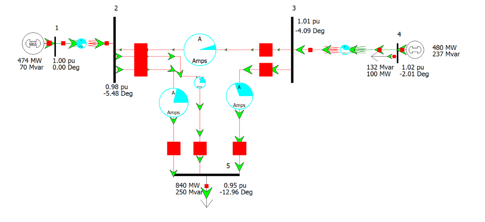
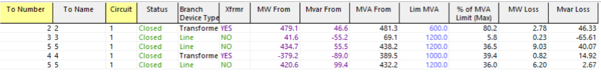

Overview
This project utilizes the Power World simulation software to find several unknown parameters of
a power system schematic. The procedures section outlines the setup for the generators,
transmission lines, transformers, and loads. By running the simulation using the N-R algorithm,
these unknown parameters are determined. The results section investigates the results and the effects of using a shunt capacitor and adding an additional
transmission line. Both methods are effective ways to increase the voltage at bus 5, but adding
another transmission line is the best option as it results in minimal power loss. Overall, Power
World and other power flow simulation software provide a quick and effective way of finding
unknown parameters.
Procedures
First, 5 buses were created. Bus 1 is the slack bus with a voltage base of 18kV. The
voltage per unit for bus 1 is 1p.u, at 0 degrees. Bus 2, 3, and 5 all have no specified voltage per
unit value or angle. They all have a voltage base of 375kV and are load buses (PQ bus). They
also do not produce any power. Lastly, Bus 4 has a voltage base of 18kV and a per unit voltage
of 1.02.
There are two generators, one at bus 1 and the other at bus 4. The generator at bus 1 will
produce power depending on the load. The real power produced at bus 4 is known—it is 480MW.
The reactive power is determined by the system's load demands. The maximum power that the
generator at bus 4 can produce is 1000MW, with no minimum real power requirement.
Several transmission lines were also created, each with its own resistance, reactance, and
susceptance values, plus a maximum capacity of 1200MVA. Line lengths were considered as well:
the line between bus 2 and bus 3 is 80 miles, between bus 2 and bus 5 is 120 miles, and between
bus 3 and bus 5 is 180 miles long.
Two transformers connect the lower-voltage and higher-voltage sections: transformer 1 between buses
1 and 2, and transformer 2 is between buses 3 and 4. Each transformer has power limits, specific
resistances, reactances, and a defined connection configuration. Transformer 1 is a
delta–wye grounded transformer, while Transformer 2 is wye grounded–delta.
Finally, two loads were configured in the simulation. One load at bus 5 draws 840MW and
250MVars, while the second load at bus 4 requires 100MW and 132MVars. After creating this
setup, the N-R power flow algorithm is run to determine the unknown parameters
(voltages, angles, line flows) and to check whether the system converges under the specified
conditions.
Results
There were undefined parameters for each of the buses. For Bus 1, the amount of power
the generator had to produce was unknown. For buses 2, 3, and 5, the voltage and phase angle
were unknown. For Bus 4, the angle and the amount of reactive power the generator would
need to produce were unknown.
After implementing the procedure and running the simulation, the power flow analysis
yielded the amount of power, voltage, and angle for several of the buses. A comprehensive
list of the voltages, angles, and generated power at each bus can be found in Table 1. Table 2
shows the power delivered through the lines and transformers, along with their capacity.
Table 1: Table showing the voltages, angle, and power generated for each bus
Table 2: Table displaying the amount of power through several lines and transformers
The voltage at Bus 5 was off by 0.05 pu. Using a shunt capacitor eliminated this difference.
The schematic above shows the power flow when a shunt capacitor is added at bus 5. The amount of
power that the shunt capacitor needed to produce to bring the bus voltage to 0.95 pu was
137.8 Mvar.

Another approach to boost the voltage at bus 5 was to add a second line
connecting bus 2 and bus 5 as shown above.
Adding a capacitor to Bus 5 can lead to unintended consequences. One issue is an increase
in power flow through certain lines, pushing them closer to their capacity limits. On the other
hand, overall reactive power losses dropped. For instance, before the capacitor installation,
the reactive power loss between Bus 3 and 5 was 27.24 Mvar, which fell to 2.67 Mvar after
installation. These changes are summarized in Table 3.

Table 3: The effects the capacitor had on the transformers and lines
Meanwhile, adding a second transmission line from Bus 2 to Bus 5 offered an overall
positive impact on the circuit, freeing up capacity across lines and transformers while also
reducing power losses. This is summarized in Table 4.
Table 4: The effects of adding another transmission line on the transformers and lines
Summary
In conclusion, the PowerWorld software is an effective tool for simulating power
systems. Two loads required powering by generators located at the slack bus
and Bus 4. After running the simulation, the voltage at Bus 5 fell below the acceptable
level of 0.95 p.u. Two approaches were considered to address this issue: adding a shunt
capacitor or installing an additional transmission line.
Out of these two possibilities, adding the transmission line is recommended because
it more effectively raises the voltage to acceptable levels and also reduces system
losses, making it the superior long-term solution.